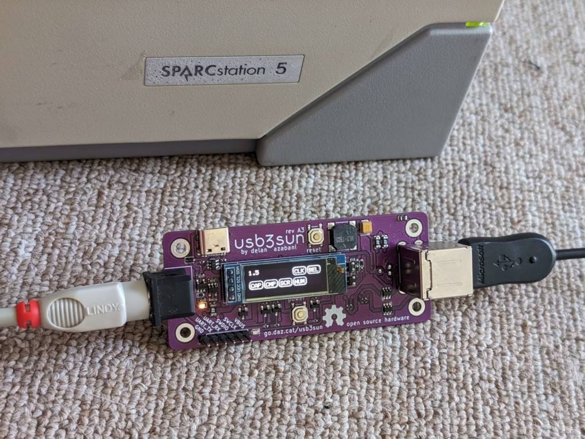
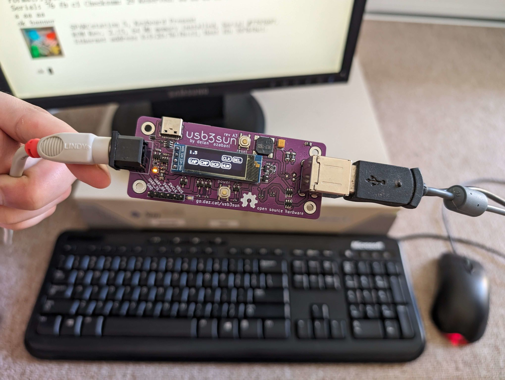

usb3sun
a usb input adapter for sun workstations
 SPARCstations have a unique serial-like interface for keyboard and mouse input, using a single 8-pin mini-din port.
usb3sun allows you to use an ordinary USB keyboard and mouse with your sun workstation!
check out our new writeup about rev A3!
- buy now on tindie
- user guide
- fork me on github
- read more about
testimonials
europa64 says:
“Honestly this is such a game changer, it really makes Suns so much more accessible for people who don’t have a hoard of vintage kit or the money to buy a keyboard on eBay. Getting these old machines into the hands of people is honestly one of the best ways to ensure they get preserved and your device really helps with that <3”want to add yours? funny (full stop) computer (a in a circle) azabani (full stop) com